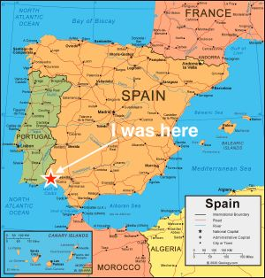

I am a graduate of College of the Holy Cross with a double major in Physics and Computer Science. I spent the 2022-23 academic school year in Huelva, Spain teaching English to children of all ages. Sí, hablo español con fluidez.
I am currently pursuing a career in software engineering.
I was a physics research assistant at Holy Cross the summers of 2020 and 2021. I helped my professor develop software to simulate a model of a neutron star with dark matter. Using Numpy (the numerical Python Library), I took partial differential equations describing the star and numerically integrated them, balancing accuracy and efficiency, to show the formation of the star. Often, it would collapse to a black hole. But when it didn't, I had a model simulating the formation and lifespan of a neutron star, admixed with fermionic dark matter.
We even published a paper on the research!
CSCI235 Analysis of Algorithms
CSCI132 Data Structures
CSCI356 Computer Networking
CSCI324 Progamming Languages Implementation and Design
CSCI363 Computational Vision
Java, C++, Python, MATLAB, HTML/CSS, SQL, Numpy, TCP and UDP, and currently intermediate knowledge of Swift.